original works
고마워서그래 엽서 Original works
2026
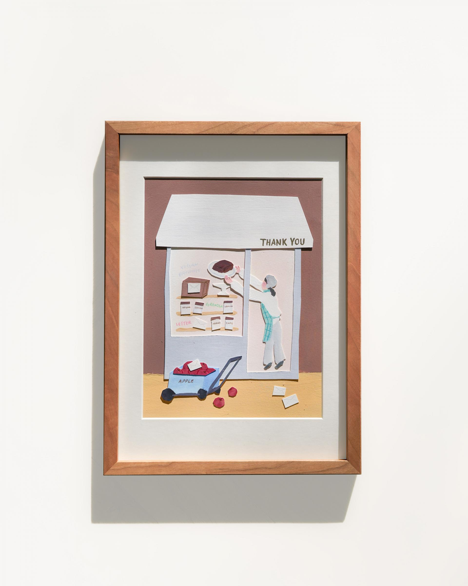
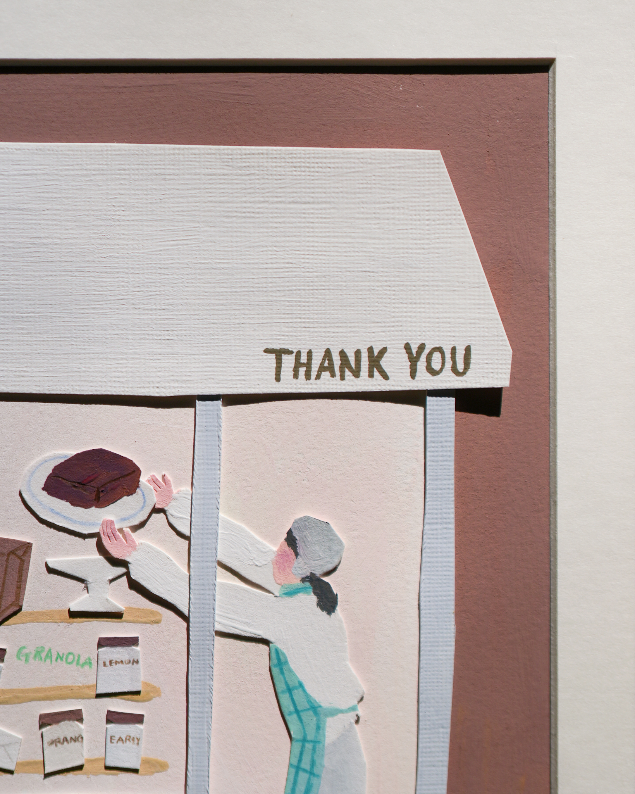
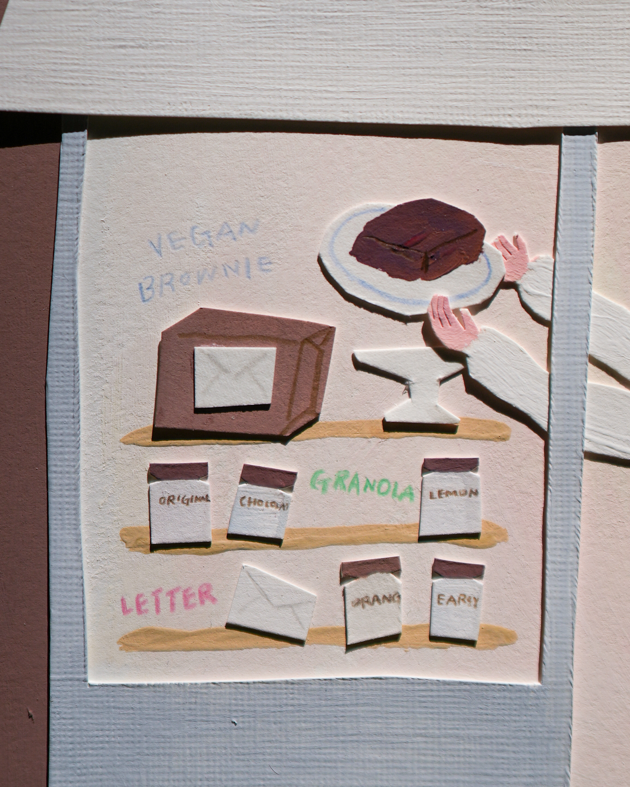
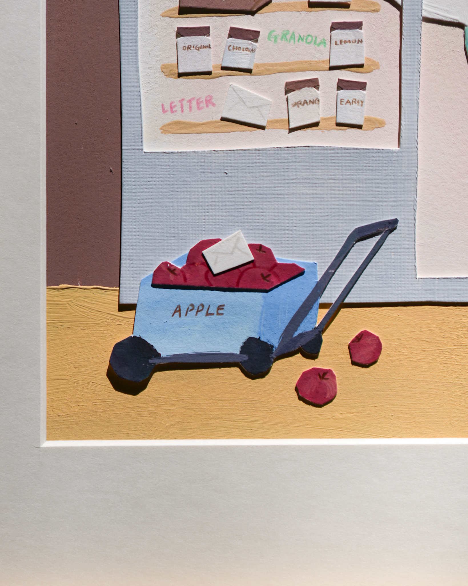
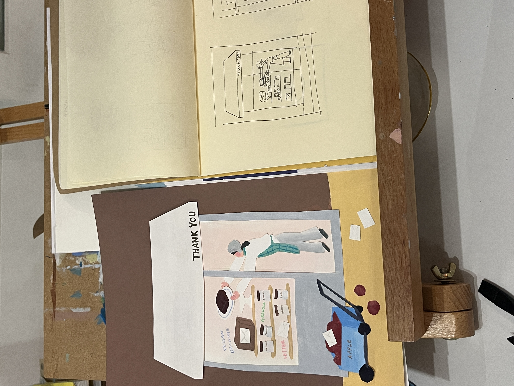
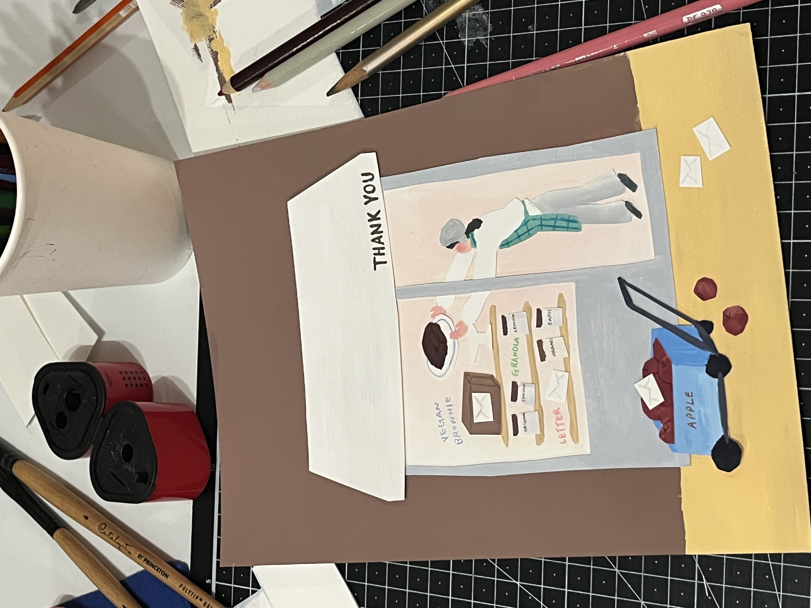

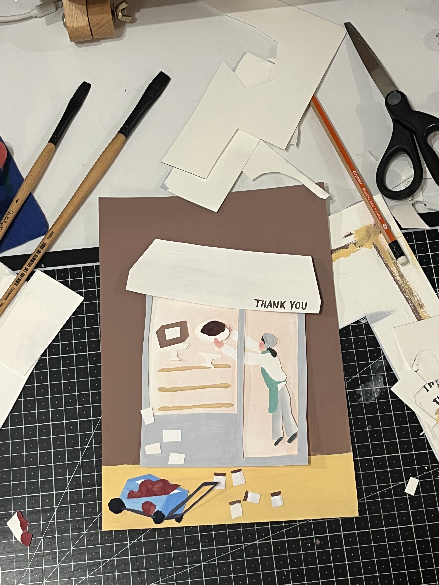
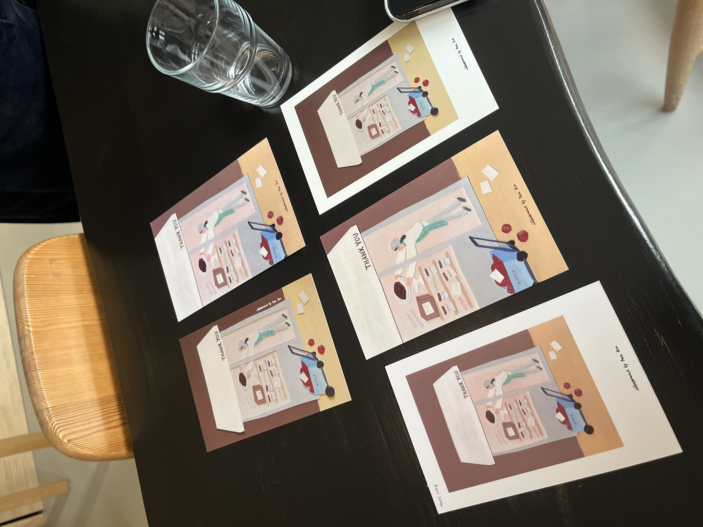
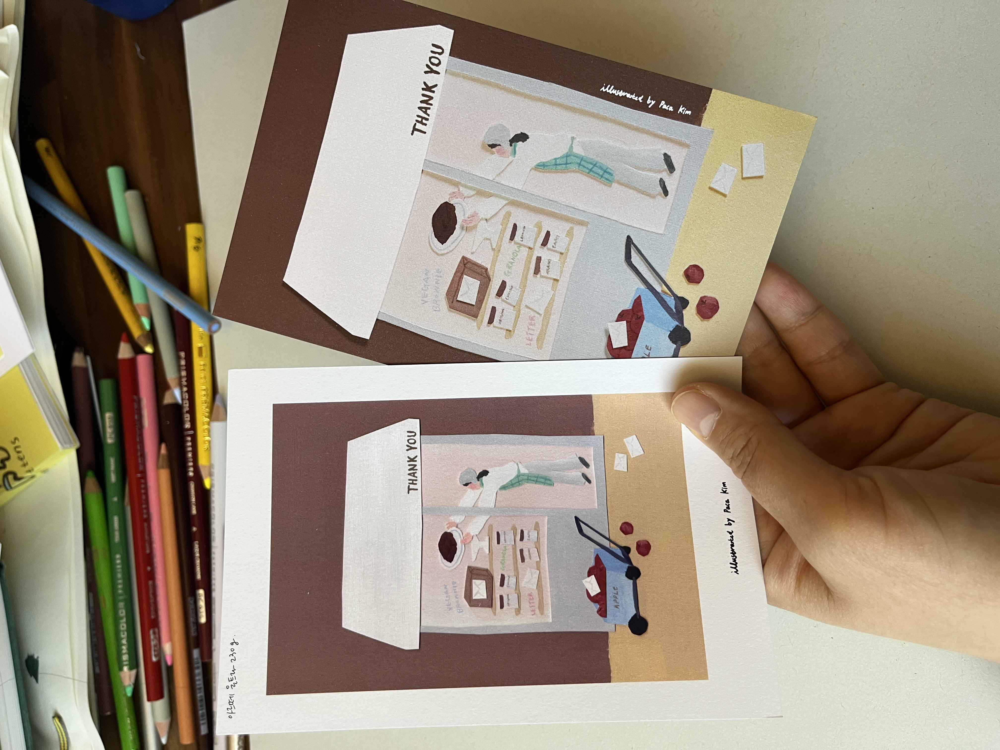
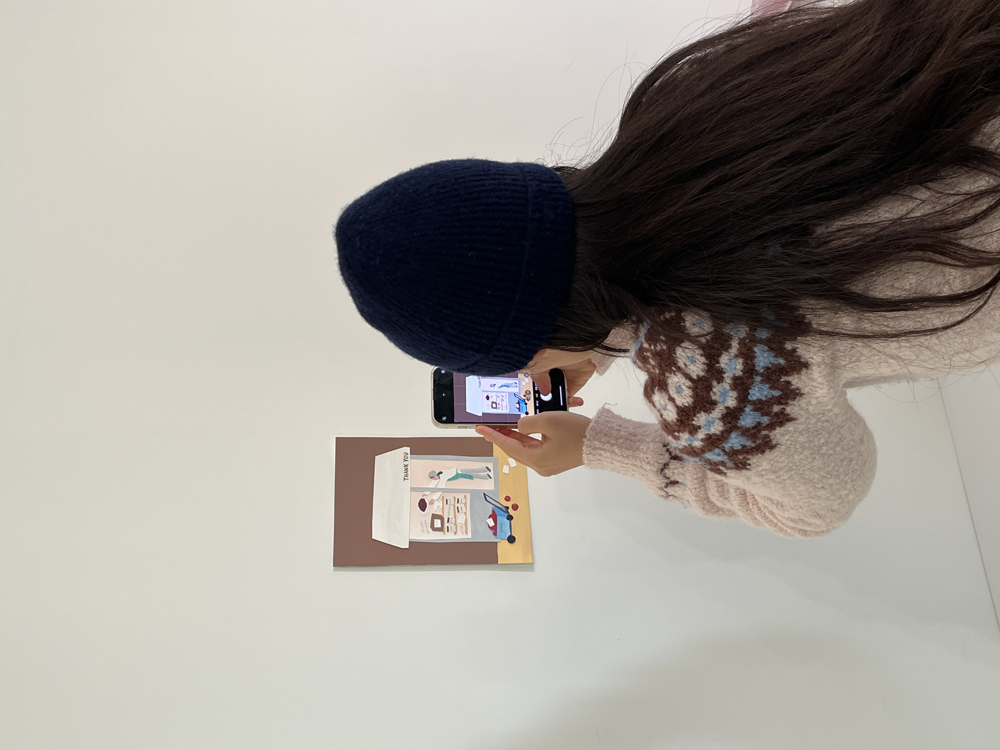

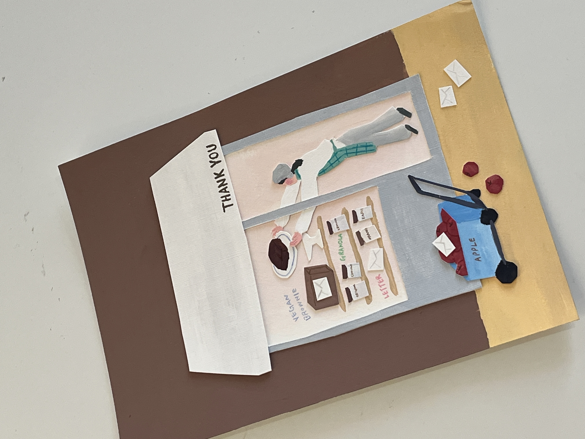
《고마워서그래》를 리뉴얼하면서 제작한 엽서의 원화입니다. 고마워서그래 대표 두란 님이 초코 브라우니를 직접 만들어 가게에 진열하는 장면을 상상하며 그렸습니다. 물감으로 그린 뒤 가위로 오려 형태를 완성하는 방식으로 작업했고요. 고마워서그래에서 만드는 초코 비건 브라우니에는 달걀, 버터, 우유가 들어가지 않는데, 맛을 위해 사과를 직접 쪄서 갈아 만든 퓨레를 사용하신다고 했습니다. 그 부분이 인상 깊어서 가게 앞에 사과 한 바구니를 쌓아두는 장면을 담았고, 두란 님의 트레이드마크라 할 수 있는 손편지도 함께 배치했습니다.
These are the original works for a postcard created for the renewal of Gomawoseogeurae. I imagined a scene of Duran, the owner, making chocolate brownies by hand and arranging them in the shop. I painted with gouache, then cut out the shapes to compose the final piece. The chocolate vegan brownies at Gomawoseogeurae contain no eggs, butter, or milk — instead, Duran steams and purees fresh apples to add moisture and flavor. That detail stayed with me, so I included a basket of apples by the shop entrance, along with the handwritten letters that have become her trademark.
액자 사진 촬영 by @imjuhyoun